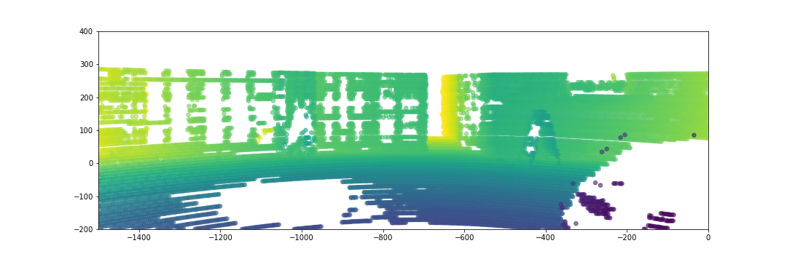

Сначала просто посмотрим на данные:
(раскрашены согласно расстоянию до лидара, т.е. начала координат)
С отмеченными осями (X,Y,Z):
После всех поворотов (согласно матрице и вокруг Z чтобы ось X была горизонтальной):
Cпроектируем все на камеру, точки раскрасим согласно оси Z
(то что впереди - желтее, позади - синее в данной цветовой схеме).
Т.к. мы проецируем все точки, многие из них будут за границами изображения,
но для наглядности отметим все и посмотрим как лежат их проекции, постепенно меняя масштаб:
Вот тот самый "крест", который в нераскрашенном виде сбивал с толку. Тем более он был вертикальный.
Теперь обрежем лишнее, получив что-то вроде того, что мы увидели бы на камере:

Как было видно выше, получилось так, что ось Z упирается в стенку.
Это не то, что нам нужно, повертим камерой, поворачивая точки вокруг оси Y.
Гифка получилась тяжелая (11Мб в несколько сжатом виде), поэтому ее можно открыть ТУТ, а ниже нарезка в приличном качестве: